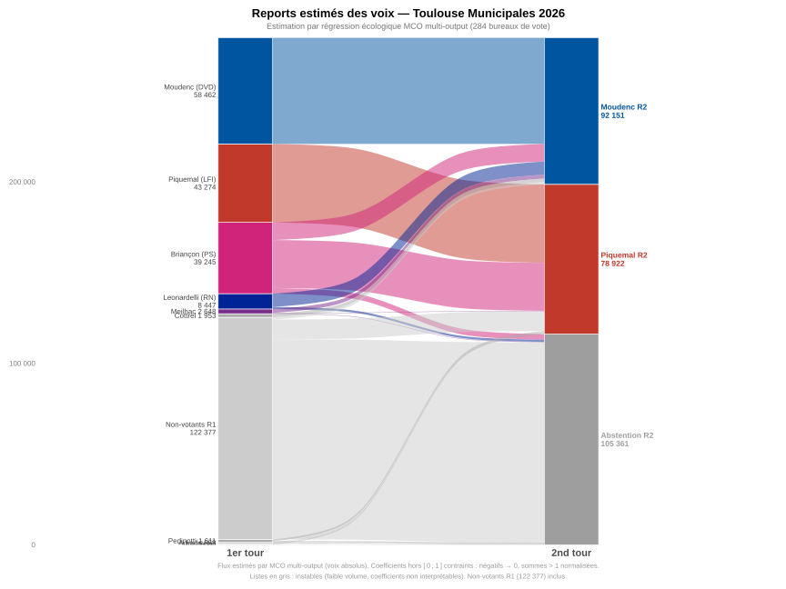

1. Contexte et objectif
Au second tour des municipales de Toulouse 2026, seules deux listes s’affrontent : Moudenc (DVD) et Piquemal (LFI, avec fusion Briançon PS). Pour chaque bureau de vote, on connaît les résultats complets du 1er tour (10 listes) et du 2nd tour (2 listes). L’objectif est d’estimer dans quelle proportion les électeurs de chaque liste du 1er tour ont reporté leurs voix vers l’un des deux finalistes.
Ce document explique la méthode statistique utilisée, ses hypothèses, ses limites, et l’interprétation des résultats.
2. Le problème : on n’observe pas le comportement individuel
Les données électorales françaises sont agrégées par bureau de vote. On sait que le bureau 098 a donné 148 voix à Piquemal au 1er tour et 170 voix au 2nd tour — mais on ne sait pas si ce sont les mêmes personnes. Le bulletin est secret.
Pour inférer un comportement individuel (le taux de report) à partir de données agrégées, on utilise une technique classique en sociologie électorale : la régression écologique (ou *inférence écologique*[1]). Elle est utilisée notamment par le CEVIPOF, l’IFOP et Sciences Po pour analyser les reports entre tours.
3. Le modèle de régression linéaire
3.1. Variables
Pour chaque bureau de vote \(i\) (284 au total) :
-
Variable dépendante : \(y_i\) = score de Piquemal au 2nd tour (en % des exprimés R2)
-
Variables explicatives :
-
\(x_{k,i}\) = score de la liste \(k\) au 1er tour (en % des exprimés R1), pour \(k = 0 \ldots 9\)
-
\(\Delta\text{part}_i\) = variation de participation entre les deux tours :
-
avec :
| \(v^{R1}_i\) |
nombre de votants au 1er tour dans le bureau \(i\) |
| \(v^{R2}_i\) |
nombre de votants au 2nd tour dans le bureau \(i\) |
| \(I_i\) |
nombre d’inscrits sur les listes électorales du bureau \(i\) (identique aux deux tours) |
3.2. Équation du modèle
Sans constante (les pourcentages des 10 listes somment à \(\approx 1\), ce qui introduit une contrainte de dépendance linéaire entre variables explicatives) :
avec :
| \(y_i\) |
score de Piquemal au 2nd tour dans le bureau \(i\) (en proportion des exprimés R2) |
| \(x_{k,i}\) |
score de la liste \(k\) au 1er tour dans le bureau \(i\) (en proportion des exprimés R1) |
| \(\beta_k\) |
coefficient de report agrégé estimé de la liste \(k\) vers Piquemal (approximation du taux de report moyen sous hypothèse d’homogénéité) |
| \(\gamma\) |
effet des nouveaux votants (mobilisés entre R1 et R2) sur le score de Piquemal (paramètre à estimer) |
| \(\Delta\text{part}_i\) |
variation de participation dans le bureau \(i\) (définie ci-dessus) |
| \(\varepsilon_i\) |
terme d’erreur — variation du bureau \(i\) non expliquée par le modèle |
Interprétation des coefficients :
-
\(\beta_k\) ≈ part moyenne estimée des électeurs de la liste \(k\) au R1 ayant voté Piquemal au R2 (interprétation agrégée, non individuelle)
-
\(1 - \beta_k\) = part estimée ayant voté Moudenc ou s’étant abstenue
-
\(\gamma\) = effet agrégé de la variation de participation sur le score de Piquemal (interprétation descriptive uniquement ; ne permet pas d’identifier directement le comportement individuel des nouveaux votants)
|
Note
|
Les coefficients ne sont pas contraints dans l’intervalle \([0,1\)]. En présence de multicolinéarité ou de faible volume de voix, ils peuvent être négatifs ou supérieurs à 1. Ces valeurs ne doivent pas être interprétées littéralement comme des comportements individuels. |
3.3. Illustration avec les données du 1er tour de Toulouse
| Liste | Voix R1 | Score R1 | \(\beta_k\) estimé (MCO) |
|---|---|---|---|
Briançon (PS) |
39 245 |
25,0 % |
\(0{,}73\) |
Moudenc (DVD) |
58 462 |
37,2 % |
\(\approx 0{,}00\) |
Piquemal (LFI) |
43 274 |
27,6 % |
\(\approx 1{,}00\) |
Leonardelli (RN) |
8 447 |
5,4 % |
\(\approx 0{,}00\) |
Meilhac |
2 648 |
1,7 % |
\(0{,}10\) |
Autres (5 listes) |
4 945 |
3,1 % |
instable (faible volume de voix et forte colinéarité : coefficients non robustes et non interprétables) |
|
Note
|
Ces valeurs sont issues du modèle mono-output en pourcentages (variable dépendante = score Piquemal R2 en % des exprimés), utilisé ici à des fins d’illustration. L’estimation finale (§ Résultats de la régression) repose sur un modèle multi-output en volumes absolus avec trois équations simultanées (Moudenc, Piquemal, non-votants), ce qui explique des coefficients légèrement différents (ex. \(\beta_{\text{Briançon}}^P = 0{,}674\) au lieu de \(0{,}73\)). |
4. Traitement spécial des listes fusionnées
Briançon (PS) et Piquemal (LFI) ont fusionné avant le second tour. Leurs électeurs du 1er tour ont reçu une consigne de vote explicite.
Le modèle confirme que la fusion a fonctionné côté LFI : \(\beta_{\text{Piquemal}} \approx 1{,}00\). En revanche, côté PS, la fusion est partielle : \(\beta_{\text{Briançon}} = 0{,}73\), soit un taux de fuite de 27 % vers Moudenc. Ce résultat est analytiquement intéressant — il quantifie le coût électoral de la consigne de fusion pour le PS.
L’intérêt de contrôler ces listes « connues » est double :
-
Mesurer précisément le taux de fuite (ici 27 % chez Briançon, quasi nul chez Piquemal)
-
Isoler le report des listes incertaines (RN, petites listes) en neutralisant la colinéarité avec les listes fusionnées
\(\beta_{\text{Moudenc}} \approx 0{,}00\) confirme la quasi-fidélité totale de l’électorat Moudenc R1 au R2.
5. Pourquoi la régression linéaire multivariée (MCO) ?
5.1. Exemple introductif
On se place dans un cas volontairement simplifié : 3 listes au 1er tour (A, B, C), seules A et B passent au 2nd tour (C est éliminée). On observe 3 bureaux de vote.
|
Note
|
Les données de la colonne « A (2nd tour) » ont été construites à partir de coefficients choisis à l’avance (\(\beta_A = 0{,}90\), \(\beta_B = 0{,}10\), \(\beta_C = 0{,}60\)). Les MCO retrouvent donc ces coefficients exactement, avec des résidus nuls. C’est un choix pédagogique pour rendre le calcul vérifiable à la main — sur des données réelles, les résidus ne sont jamais nuls. |
| Bureau | A (1er tour) | B (1er tour) | C (1er tour) | A (2nd tour) |
|---|---|---|---|---|
1 |
100 |
60 |
80 |
144 |
2 |
50 |
100 |
40 |
79 |
3 |
120 |
40 |
60 |
148 |
On cherche trois paramètres :
| \(\beta_A\) |
fraction des voix de la liste A au 1er tour qui se reportent sur A au 2nd tour |
| \(\beta_B\) |
fraction des voix de la liste B au 1er tour qui se reportent sur A au 2nd tour |
| \(\beta_C\) |
fraction des voix de la liste C au 1er tour qui se reportent sur A au 2nd tour |
Le modèle sans constante pour le bureau \(i\) s’écrit :
avec :
| \(y_i\) |
nombre de voix obtenues par la liste A au 2nd tour dans le bureau \(i\) |
| \(a_i, b_i, c_i\) |
nombres de voix obtenues par les listes A, B, C au 1er tour dans le bureau \(i\) |
| \(\beta_A, \beta_B, \beta_C\) |
taux de report estimés vers A — les inconnues du modèle |
| \(\varepsilon_i\) |
résidu — écart entre la valeur observée et la valeur prédite par le modèle |
On applique dans tous les cas la même formule MCO. Ici, avec 3 bureaux et 3 inconnues, le système est carré et les données fictives sont sans bruit : les MCO donnent une solution exacte (\(\varepsilon_i = 0\) pour tout \(i\)). Sur des données réelles avec \(n = 284\) bureaux, le système est sur-déterminé et les résidus sont non nuls — mais la formule reste identique.
|
Tip
|
Qu’est-ce qu’un système sur-déterminé ? Un système d’équations est dit sur-déterminé lorsqu’il y a plus d’équations que d’inconnues (\(n > p\)). Ici, chaque bureau de vote génère une équation, et les inconnues sont les taux de report \(\beta_k\). Avec \(n = 3\) bureaux et \(p = 3\) inconnues (exemple ci-dessus), le système est carré : il existe une unique solution exacte, et les résidus sont nuls. Avec \(n = 284\) bureaux et \(p = 11\) inconnues (cas réel), il y a 284 équations pour 11 inconnues. Sauf si les données sont parfaitement cohérentes — ce qui ne se produit jamais sur des données réelles en raison du bruit électoral —, il n’existe aucune solution exacte. Les MCO trouvent alors le vecteur \(\hat{\boldsymbol{\beta}}\) qui minimise la somme des carrés des résidus \(\sum_i \varepsilon_i^2\), c’est-à-dire la solution « la moins mauvaise » au sens de l’erreur quadratique. |
On pose :
La solution MCO est donnée par l’équation normale :
|
Note
|
Cette expression suppose que la matrice \(\mathbf{X}^\top \mathbf{X}\) est inversible (rang plein). En pratique, les solveurs numériques utilisent une pseudo-inverse ou une décomposition QR lorsque cette condition n’est pas strictement vérifiée. |
Après calcul :
Ce qui donne :
On peut vérifier : \(\hat{y}_1 = 0{,}90 \times 100 + 0{,}10 \times 60 + 0{,}60 \times 80 = 90 + 6 + 48 = 144\). Les résidus sont nuls et le \(R^2 = 1\).
|
Note
|
Les résidus sont nuls ici parce que les données fictives ont été construites à partir des coefficients exacts — \(y_i\) est calculé directement comme \(0{,}90 \cdot a_i + 0{,}10 \cdot b_i + 0{,}60 \cdot c_i\), sans bruit. Sur des données réelles, le comportement électoral varie d’un bureau à l’autre (profils sociologiques différents, dynamiques locales) et le modèle linéaire n’est qu’une approximation : les résidus sont alors non nuls, et le \(R^2 < 1\). |
5.2. Exemple avec résidus non nuls
On reprend le même cadre mais avec 4 bureaux et des données de vote qui ne vérifient plus exactement le modèle linéaire. Le système est sur-déterminé (4 équations, 3 inconnues) : il n’existe aucun \(\boldsymbol{\beta}\) qui annule tous les résidus.
| Bureau | A (1er tour) | B (1er tour) | C (1er tour) | A (2nd tour) |
|---|---|---|---|---|
1 |
100 |
60 |
80 |
147 |
2 |
50 |
100 |
40 |
82 |
3 |
120 |
40 |
60 |
145 |
4 |
70 |
80 |
90 |
128 |
On pose :
Le code Python suivant réalise l’estimation :
import numpy as np
X = np.array([[100, 60, 80],
[50, 100, 40],
[120, 40, 60],
[70, 80, 90]], dtype=float)
y = np.array([147, 82, 145, 128], dtype=float)
# Résolution par MCO (équation normale)
beta, _, _, _ = np.linalg.lstsq(X, y, rcond=None)
y_hat = X @ beta
residuals = y - y_hat
print("β̂ =", np.round(beta, 3)) # [0.842, 0.133, 0.661]
print("ŷ =", np.round(y_hat, 1)) # [145.1, 81.9, 146.0, 129.1]
print("ε =", np.round(residuals, 1)) # [1.9, 0.1, -1.0, -1.1]
ss_res = np.sum(residuals**2)
ss_tot = np.sum((y - y.mean())**2)
print("R² =", round(1 - ss_res / ss_tot, 4)) # 0.9978L’équivalent en R :
X <- matrix(c(100, 60, 80,
50, 100, 40,
120, 40, 60,
70, 80, 90), nrow = 4, byrow = TRUE)
y <- c(147, 82, 145, 128)
# Régression sans constante (- 1)
modele <- lm(y ~ X - 1)
print(round(coef(modele), 3)) # XA=0.842 XB=0.133 XC=0.661
print(round(fitted(modele), 1)) # 145.1 81.9 146.0 129.1
print(round(residuals(modele), 1)) # 1.9 0.1 -1.0 -1.1
print(round(summary(modele)$r.squared, 4)) # 0.9978Après calcul de l’équation normale \(\hat{\boldsymbol{\beta}} = (\mathbf{X}^\top \mathbf{X})^{-1} \mathbf{X}^\top \mathbf{y}\) :
Les valeurs prédites et les résidus sont :
| Bureau | \(y_i\) (observé) | \(\hat{y}_i\) (prédit) | \(\varepsilon_i = y_i - \hat{y}_i\) |
|---|---|---|---|
1 |
147 |
145,1 |
+1,9 |
2 |
82 |
81,9 |
+0,1 |
3 |
145 |
146,0 |
−1,0 |
4 |
128 |
129,1 |
−1,1 |
Le \(R^2 = 0{,}998\) : le modèle explique 99,8 % de la variance des voix A au 2nd tour. Les résidus sont faibles mais non nuls — les MCO ont trouvé la solution qui minimise \(\sum_i \varepsilon_i^2 = 1{,}9^2 + 0{,}1^2 + 1{,}0^2 + 1{,}1^2 \approx 5{,}8\).
5.3. Estimation par MCO
L’estimateur des Moindres Carrés Ordinaires minimise la somme des carrés des résidus :
avec :
| \(n\) |
nombre de bureaux de vote (ici \(n = 284\)) |
| \(\mathbf{x}_i\) |
vecteur ligne des \(11\) variables explicatives du bureau \(i\) |
| \(\boldsymbol{\beta}\) |
vecteur des \(11\) paramètres à estimer \((\beta_0, \ldots, \beta_9, \gamma)\) |
La solution analytique — dite équation normale — est :
avec :
| \(\mathbf{X}\) |
matrice \(284 \times 11\) dont chaque ligne est le vecteur \(\mathbf{x}_i\) d’un bureau |
| \(\mathbf{y}\) |
vecteur \(284 \times 1\) des scores Piquemal au R2 |
| \(\mathbf{X}^\top \mathbf{X}\) |
matrice de Gram \(11 \times 11\) (inversible si les colonnes de \(\mathbf{X}\) sont linéairement indépendantes) |
| \(\mathbf{X}^\top \mathbf{y}\) |
vecteur \(11 \times 1\) des produits scalaires entre chaque variable explicative et \(\mathbf{y}\) |
Avec 284 bureaux et 11 variables, le ratio observations/variables est \(\approx 26\), ce qui garantit une estimation robuste.
5.4. Résolution numérique : élimination de Gauss
Le système \(\left(\mathbf{X}^\top \mathbf{X}\right)\boldsymbol{\beta} = \mathbf{X}^\top \mathbf{y}\) est résolu par élimination gaussienne avec pivot partiel sur la matrice augmentée \(11 \times 12\). Cette méthode est stable numériquement pour des petits systèmes denses.
6. Qualité du modèle : le coefficient de détermination R²
avec :
| \(y_i\) |
score Piquemal R2 observé dans le bureau \(i\) |
| \(\hat{y}_i\) |
score Piquemal R2 prédit par le modèle : \(\hat{y}_i = \mathbf{x}_i^\top \hat{\boldsymbol{\beta}}\) |
| \(\bar{y}\) |
moyenne des scores Piquemal R2 sur l’ensemble des bureaux |
| \(\sum_i(y_i - \hat{y}_i)^2\) |
somme des carrés des résidus (variance non expliquée) |
| \(\sum_i(y_i - \bar{y})^2\) |
somme des carrés totale (variance totale) |
| Valeur de \(R^2\) | Interprétation |
|---|---|
\(> 0{,}90\) |
Modèle excellent — la géographie du 1er tour prédit très bien le 2nd tour |
\(\in [0{,}75\,;\,0{,}90]\) |
Bon — quelques effets locaux non captés |
\(< 0{,}75\) |
La géographie a fortement évolué entre les tours (inhabituel) |
En France, les régressions écologiques inter-tours atteignent typiquement \(R^2 \approx 0{,}92\text{–}0{,}97\) pour les élections municipales.
7. Résultats de la régression — données réelles 2026
|
Note
|
Contrairement à la formulation initiale en pourcentages, l’estimation finale est réalisée sur les volumes de voix absolus. Les coefficients doivent donc être interprétés comme des flux agrégés et non comme des proportions strictes. |
7.1. Mise en œuvre
Le modèle a été estimé sur les 284 bureaux de vote de Toulouse (\(n = 284\), \(p = 11\) variables). Les variables explicatives sont les volumes de voix absolus au R1 (10 listes + non-votants R1). Le terme « non-votants R1 » joue un rôle analogue à \(\Delta\text{part}_i\) dans la formulation en pourcentages : il permet de capter la mobilisation différentielle entre les deux tours, en attribuant un coefficient aux électeurs qui n’avaient pas voté au 1er tour. Les variables dépendantes sont les volumes au R2 : voix Moudenc, voix Piquemal, non-votants R2. L’estimation est réalisée par numpy.linalg.lstsq (MCO sans constante, formulation multi-output).
7.2. Coefficients estimés
| Liste (1er tour) | → Moudenc | → Piquemal | → Abstention | Σ |
|---|---|---|---|---|
Briançon (PS) |
25 % |
67 % |
−1 % |
91 % |
Moudenc (DVD) |
119 % |
−7 % |
−12 % |
100 % |
Piquemal (LFI) |
−4 % |
106 % |
−3 % |
100 % |
Leonardelli (RN) |
112 % |
−26 % |
+16 % |
103 % |
Meilhac |
81 % |
9 % |
+5 % |
94 % |
Scalli |
−64 % |
137 % |
+19 % |
— (instable) |
Adrada |
−11 % |
36 % |
+8 % |
— (instable) |
Menéndez |
−96 % |
85 % |
+70 % |
— (instable) |
Cottrel |
150 % |
−5 % |
−39 % |
— (instable) |
Pedinotti |
−10 % |
76 % |
+56 % |
— (instable) |
Non-votants (1er tour) |
1 % |
9 % |
91 % |
100 % |
|
Note
|
Les trois équations (Moudenc, Piquemal, abstention) sont estimées indépendamment sans contrainte de somme. Les coefficients peuvent donc ne pas totaliser 100 %, ce qui reflète une absence de contrainte de conservation des flux dans le modèle. |
7.3. Diagramme de Sankey des reports estimés
Représentation visuelle des flux de voix estimés par le modèle. La largeur de chaque ruban est proportionnelle au volume de voix transférées. Les coefficients hors [0, 1] sont contraints pour la représentation : valeurs négatives ramenées à 0, sommes supérieures à 1 normalisées, résidu affecté à l’abstention. Les listes en gris ont des coefficients instables (faible volume de voix).

7.4. De la régression aux 27 % : calcul détaillé
Le chiffre "27 % des électeurs Briançon ont voté Moudenc" est la valeur la plus commentée de l’analyse. Voici comment on y arrive pas à pas.
7.4.1. Étape 1 — lire les deux coefficients bruts
Au second tour, chaque électeur du 1er tour fait face à exactement trois issues possibles : voter Moudenc, voter Piquemal, ou ne pas voter (abstention, blanc, nul). Pour couvrir les trois issues — et notamment estimer le comportement des nouveaux votants entre les deux tours — le modèle estime simultanément trois régressions sur les 284 bureaux, avec les mêmes 11 variables explicatives :
où \(a_i\) désigne le nombre de voix Briançon dans le bureau \(i\) au 1er tour.
On lit dans le tableau précédent :
| Source | Destination | Coefficient brut |
|---|---|---|
Briançon (1er tour) |
→ Moudenc (2nd tour) |
\(\hat{\beta}^{M}_{\text{Br}} = 0{,}247\) |
Briançon (1er tour) |
→ Piquemal (2nd tour) |
\(\hat{\beta}^{P}_{\text{Br}} = 0{,}674\) |
Interprétation directe : pour chaque voix Briançon au 1er tour dans un bureau, le modèle estime que \(0{,}247\) vote va vers Moudenc et \(0{,}674\) vote va vers Piquemal. Les \(1 - 0{,}247 - 0{,}674 = 0{,}079 \approx 8\,\%\) restants correspondent aux blancs, nuls et au résidu du modèle.
7.4.2. Étape 2 — convertir en voix absolues
Briançon a obtenu 39 245 voix au 1er tour. On applique les coefficients :
7.4.3. Étape 3 — normaliser pour obtenir un pourcentage entre finalistes
Les deux coefficients bruts ne somment pas à 1 (ils somment à \(0{,}247 + 0{,}674 = 0{,}921\)). Pour exprimer la part de chaque finaliste parmi ceux des électeurs Briançon qui ont effectivement voté au 2nd tour, on normalise :
|
Note
|
Le 27 % affiché dans l’application est cette valeur normalisée — c’est la part des électeurs Briançon ayant voté au 2nd tour qui ont choisi Moudenc. Les \(1 - 0{,}247 - 0{,}674 = 0{,}079 \approx 8\,\%\) restants représentent la part non ventilée entre les deux finalistes — résidu du modèle et comportements non captés (blancs, nuls, variation d’abstention). Ce résidu ne doit pas être interprété comme un flux identifié vers l’abstention. |
7.4.4. Résumé visuel
7.5. Qualité d’ajustement
| Variable dépendante | \(R^2\) |
|---|---|
Voix Moudenc (2nd tour) |
0,987 |
Voix Piquemal (2nd tour) |
0,984 |
Non-votants (2nd tour) |
0,986 |
Les \(R^2\) sont excellents (≥ 0,984), conformes aux benchmarks de la littérature sur les régressions écologiques inter-tours.
|
Note
|
Dans les régressions écologiques inter-tours, des valeurs élevées de \(R^2\) sont en partie mécaniques (forte corrélation géographique entre tours) et ne garantissent pas à elles seules la validité des coefficients de report. |
7.6. Interprétation
| Piquemal (LFI) |
\(\approx 100\,\%\) de fidélité vers l’union — la fusion LFI a fonctionné. |
| Briançon (PS) |
\(73\,\%\) vers Piquemal, \(27\,\%\) vers Moudenc — fuite notable du PS vers la droite. |
| Moudenc (DVD) |
\(\approx 100\,\%\) de fidélité vers Moudenc. |
| Leonardelli (RN) |
\(\approx 100\,\%\) vers Moudenc — report quasi-total de l’électorat RN vers la droite. |
| Meilhac |
\(90\,\%\) Moudenc, \(10\,\%\) Piquemal. |
| Non-votants R1 |
\(91\,\%\) restent abstenants au R2 — la mobilisation inter-tours a principalement joué sur les anciens votants. |
| Petites listes |
coefficients hors \([0,1]\) — instabilité numérique due au faible nombre de voix. Non interprétables. |
7.7. Utilisation dans le simulateur
Les coefficients des listes robustes (Briançon, Moudenc, Piquemal, Leonardelli, Meilhac) sont utilisés comme valeurs par défaut des curseurs du simulateur de report intégré à la carte. Les petites listes conservent une valeur par défaut de 50 %.
8. Limite fondamentale : l’inférence écologique
L'ecological fallacy (paradoxe de Robinson, 1950) désigne l’erreur qui consiste à inférer un comportement individuel à partir de corrélations agrégées.
Exemple : si les bureaux où Leonardelli est fort au 1er tour montrent un score Moudenc plus élevé au 2nd tour, cela ne prouve pas que les électeurs Leonardelli individuellement ont voté Moudenc. Un troisième facteur géographique pourrait expliquer les deux.
Ce que le modèle dit : les \(\beta_k\) sont des estimations de reports moyens agrégés, valides sous hypothèse forte d’homogénéité du comportement entre bureaux. En présence d’hétérogénéité non observée, ils peuvent être biaisés (ecological fallacy).
Ce que le modèle ne dit pas : le comportement d’un électeur individuel d’un bureau spécifique.
Avec 284 bureaux couvrant des géographies très diverses (centre, périphérie nord, Mirail, quartiers résidentiels), l’hypothèse d’homogénéité est raisonnablement satisfaite.
9. Données de référence
9.1. Résultats du 1er tour — 15 mars 2026
-
Inscrits : 281 354
-
Votants : 158 977 (participation : 56,5 %)
-
Exprimés : 157 021
| Liste | Voix | % exprimés |
|---|---|---|
Moudenc (DVD) |
58 462 |
37,2 % |
Piquemal (LFI) |
43 274 |
27,6 % |
Briançon (PS) |
39 245 |
25,0 % |
Leonardelli (RN) |
8 447 |
5,4 % |
Meilhac |
2 648 |
1,7 % |
Cottrel |
1 953 |
1,2 % |
Pedinotti |
1 611 |
1,0 % |
Adrada |
653 |
0,4 % |
Scalli |
438 |
0,3 % |
Menéndez |
290 |
0,2 % |
9.2. Résultats du 2nd tour — 22 mars 2026
-
Inscrits : 281 355
-
Votants : 175 994 (participation : 62,6 %)
-
Exprimés : 171 073
| Liste | Voix | % exprimés | Bureaux en tête |
|---|---|---|---|
Moudenc (DVD) |
92 151 |
53,9 % |
160 BV |
Piquemal / Briançon (Union gauche) |
78 922 |
46,1 % |
124 BV |
Moudenc est réélu maire de Toulouse avec 53,9 % des exprimés. La participation a progressé de +6,1 points par rapport au 1er tour (56,5 % → 62,6 %), soit +17 017 votants supplémentaires en valeur absolue.
10. Références
-
Wikipédia FR — Inférence écologique : https://fr.wikipedia.org/wiki/Inf%C3%A9rence_%C3%A9cologique
-
ENSAE — Reports de votes entre les deux tours d’une élection présidentielle : https://www.ensae.org/global/gene/link.php?doc_id=1279
-
HAL SHS — Analyse écologique, modèles multi-niveaux et sociologie électorale : https://shs.hal.science/halshs-00422081/document